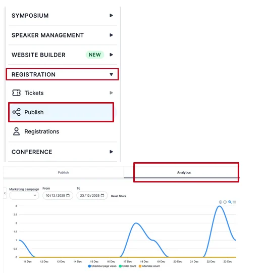
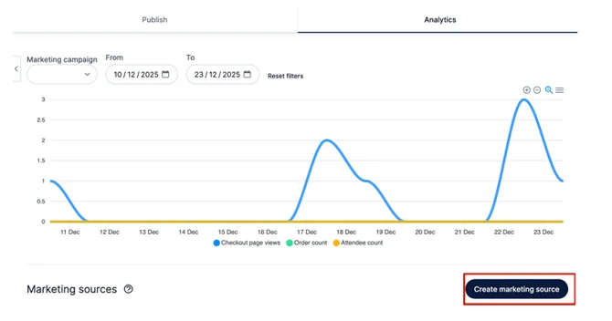
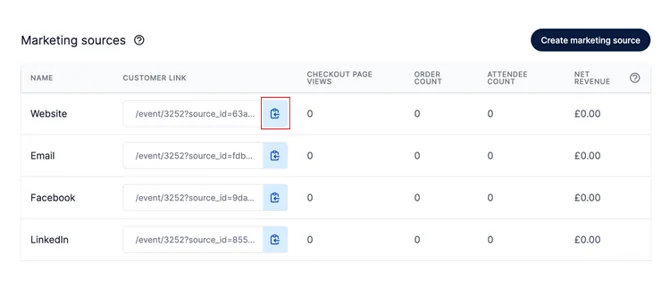
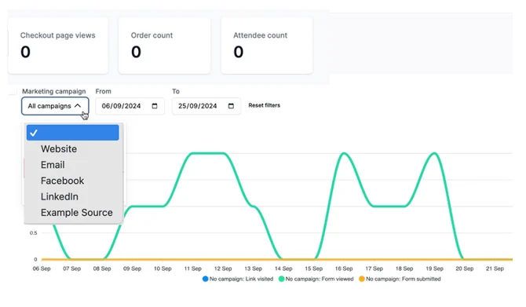

Using registration analytics
Find out how to use Delegate Registration analytics, and what they can do to help elevate your event.#
Please Note: This information is for Admins ONLY!
Registration Analytics allows Admins to track links to get a better overview of where attendees have seen/clicked the link to register for your event.
For example: an attendee has followed the link you placed on LinkedIn, inviting people to register to attend your event.
You’ll see how many people have clicked on the link you placed on LinkedIn and when etc.
To access Registration Analytics, navigate to the left-hand menu on your dashboard and click on Registration—Publish—Analytics (tab at the top right of the page).

When people start clicking on your links you will see a graph on the analytics homepage, detailing dates of when the link has been clicked and by how many people.
How to create a link
Click on the Create Marketing Source button to the right of the screen.

Next, add the source name to the box on the screen that pops up to the right.
This is so you can name the link and track where it is from.
Then click on the Create Source button.
For example: Name the source "Facebook" if you're posting the link on Facebook. The clicks from Facebook will show in your analytics.
You’ll need to create a source name for each place you post a link.
- For example, if you post links on your website, Facebook, email, and LinkedIn, you’ll need to create four separate source names: Website, Facebook, Email, and LinkedIn.
Now, on your analytics homepage, you’ll see under Marketing Sources those Source Links you have named and created with a customer link next to them.
You copy the relevant link by clicking on the Copy link button next to the link and pasting it to your website/Facebook/LinkedIn etc etc.

When people start to click on the links, a graph will begin to populate on the Analytics homepage.
From the drop-down box named Marketing Campaign you can choose whether you want to see an overview of all the links or if you’d prefer to break it down to view links from each source, i.e. just from a LinkedIn post.

Should you need further assistance, please contact our Support
Did this page solve it?
Thanks — this helps us fix it.
Didn't solve it? Ask our support team
No question is too small, and there's no charge for asking. Raise a ticket and someone who knows the software will pick it up.